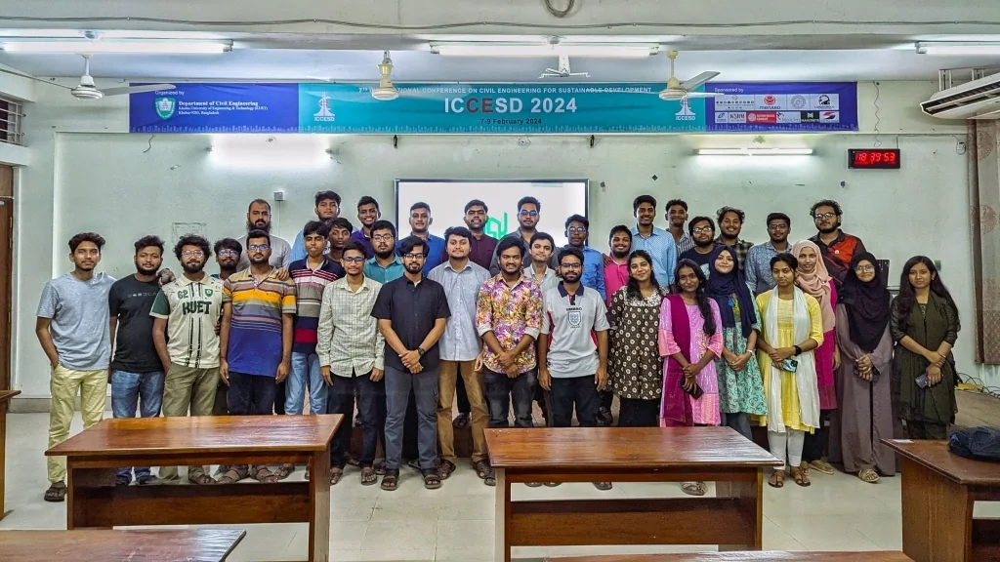
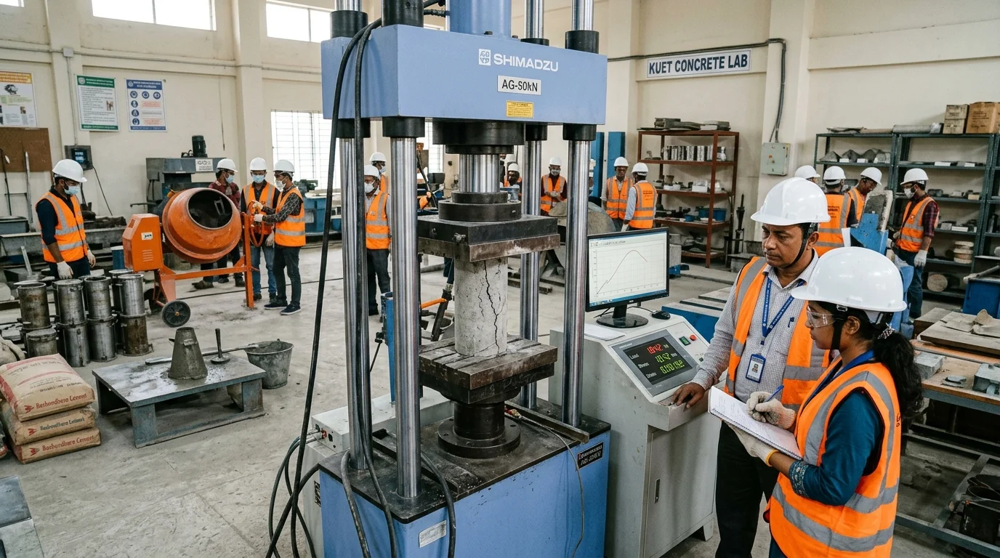
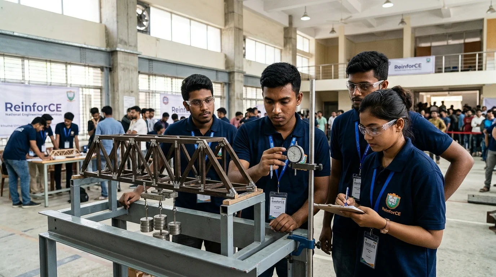
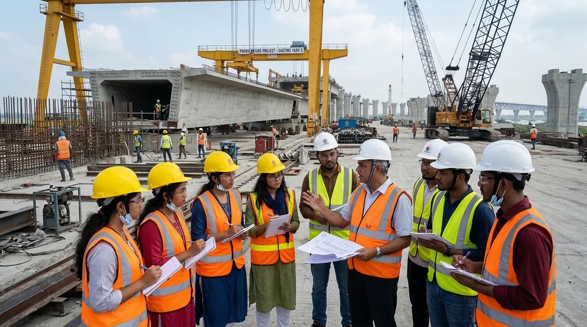
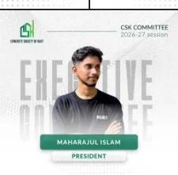
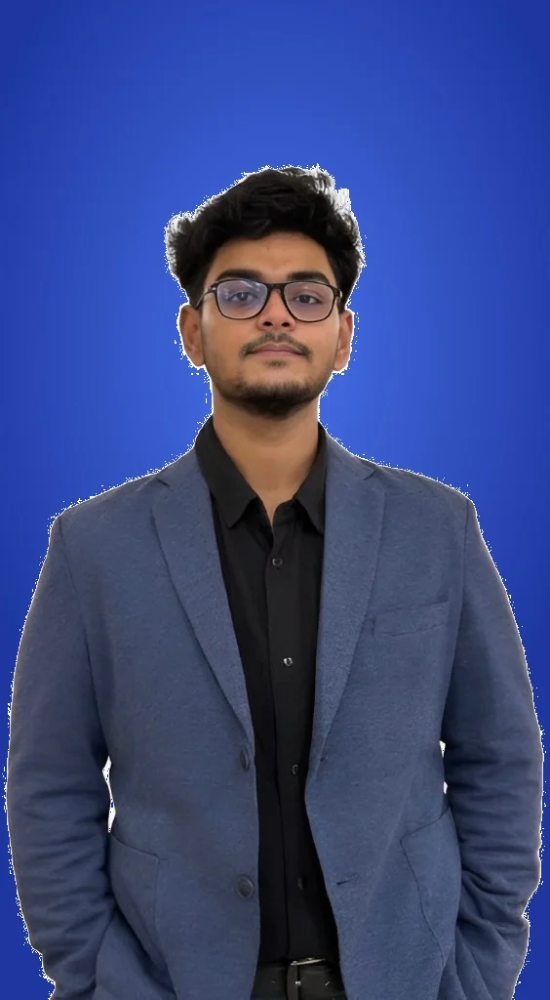

Department of Civil Engineering, Khulna University of Engineering & Technology. Fostering engineering brilliance, cutting-edge concrete mechanics, and national competitive dominance.
Click any segment to view detailed competition guidelines, rulebooks, and registration procedures.
Annual General Meetings (AGM), parliamentary student sessions, chapter council deliberations, and institutional conventions.
Explore ACI Events →Premier national civil engineering festival: Truss Triumph, Crack the Case, Photo Quest, 3MT, and Concrete Mix Prototyping.
View Rulebooks & Register →Hands-on casting in KUET concrete labs, NDT rebound hammer testing, compressive strength UTM trials, and software bootcamps.
View Technical Events →Internal challenges for freshman integration: Balsa Truss Challenge, Speed CAD Master, Mechanics Mania, and The Odyssey.
View Domestic Challenges →8 Mega-infrastructure expeditions: Seven Rings VRM plant, Akij Cement Noapara, Bashundhara RMC, and Rupsha Rail Bridge.
Explore Site Tours →24-Hour Next-Day Virtual Handover masterclasses across 4 wings: Higher Study, BCS Govt Jobs, Research, and Corporate Placement.
Explore Masterclasses →National laurels, inter-university championship trophies, and our global SYPAC award roadmap.
First place awards in structural forensic case analysis and composite FRP retrofitting challenges across premier university engineering festivals.
Qualified for the prestigious ACI Outstanding Student Chapter international designation under American Concrete Institute HQ scoring rubric.
Undergraduate civil engineering students certified in industry software (AutoCAD, ETABS, SAFE, Revit BIM, Civil 3D) within departmental computing labs.
Capturing the spirit of casting sessions, seminar-to-webinar handoffs, site visits, and celebration of engineering excellence. Click any photograph to view the full section.




Greetings from the ACI Student Chapter, KUET!
As the driving force behind our vibrant community, the chapter strives to connect students, educators, and industry professionals in the realm of civil engineering. Our vision goes beyond academics, aiming to create a platform where innovative ideas meet real-world challenges, and aspiring engineers gain the skills and insights necessary to lead the future.
With initiatives like technical workshops, hands-on laboratory training, and signature events such as ReinforCE 1.0, we provide opportunities for members to grow, collaborate, and excel. At ACI KUET, we celebrate creativity, embrace challenges, and work together to achieve excellence in all facets of concrete mechanics and structural engineering.
I encourage every member to actively participate, share ideas, and take advantage of the resources and opportunities our chapter offers. Let’s continue building a community that not only upholds engineering brilliance but also inspires growth and innovation.
Official statements from the Initiator & Founding Convener and the Chapter President on strategic execution, student empowerment, and national competitive dominance.

"Our operational commitment guarantees that every student, from freshman apprentices to graduating seniors, has direct access to technical mentors, hands-on materials testing, verified certification, and leadership succession without administrative friction."
Every single event dossier, participant roster, and workshop outcome is archived systematically in compliance with ACI International model bylaws, ensuring sustained institutional growth for KUET.

"Civil Engineering is not meant to be confined to lecture slides, rigid formulas, or predictable lab quizzes. Real engineering lives in the grit of the field: in the heat of trial and error, in the tactile weight of high-performance aggregate mixes, and in the adrenaline of seeing a design withstand extreme structural loads."
Through rigorous software bootcamps, localized industrial tours, and our elite 3-tier national competition architecture, ACI KUET establishes our arena to dominate nationally and represent Bangladesh globally.